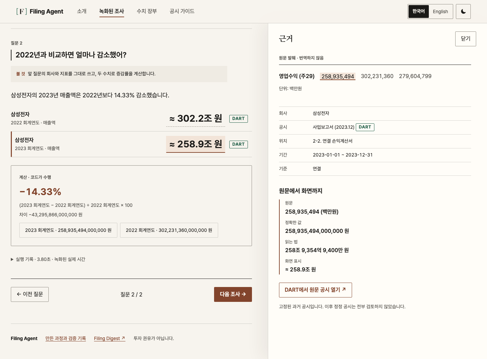

웹 · AI · 개인 프로젝트 · 2026.09–2026.11
Filing Agent
정해 둔 과거 기업 공시의 숫자를 질문하고 비교하는 로컬 앱입니다. AI는 질문의 뜻을 파악하고, 프로그램 코드가 자료 선택과 계산, 답변 작성을 맡도록 나눴습니다.
- Python
- FastAPI
- LangGraph
- PostgreSQL
- React
- 120회 한·영 시나리오 실행 통과
- 2.96초 응답 시간 중앙값 · M1 Pro
- 15개 검증한 공시 수치
질문후속 질문 포함
의도 해석로컬 Gemma
근거 · 계산코드 · Decimal
저장PostgreSQL
- 질문
요청마다 request_id를 받아 같은 요청이 두 번 와도 한 번만 처리합니다. 실패한 질문은 한 번만 다시 시도할 수 있습니다.
- 의도 해석
로컬 Gemma는 질문이 무엇을 묻는지만 정해진 형식으로 돌려줍니다. 모르는 회사나 정해지지 않은 값이 섞인 응답은 파서가 거부하고, 모델은 수치를 보지 않습니다.
- 근거 · 계산
어느 공시 수치를 쓸지와 계산은 코드가 맡습니다. 금액은 Decimal로 계산해 소수 둘째 자리에서 반올림하고, 근거의 출처는 DART와 SEC 두 곳으로 제한했습니다.
- 저장
LangGraph의 진행 단계를 PostgreSQL 체크포인트에 저장합니다. 조사 문서는 행 잠금을 걸고 갱신합니다.
모델이 계산까지 맡아야 할까?
모델 실험에서는 근거를 맞게 골라도 증가·감소 설명이 틀렸습니다. 모델에는 질문 의도 해석만 맡기고, 근거 선택·Decimal 계산·한영 금융 답변은 코드가 결정하도록 했습니다.

공개 데모는 저장된 실행 기록을 재생하는 화면이며 새 질문은 받지 않습니다. AI 에이전트와 함께 만들었습니다. 저는 계획을 세우고 결과를 검토했으며, 평가 시나리오는 에이전트가 작성했습니다.